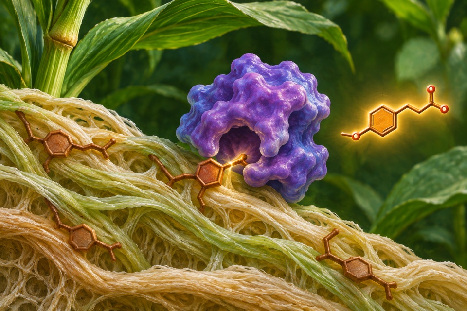

Module 01
Imaging the direction and speed of microtubule growth
Measure the movement of growing microtubule ends in live cells.
Evidence recordOpen any of the ten modules to see the reported observation, its sources, and the research questions still open.
Measure the movement of growing microtubule ends in live cells.
Evidence record
Measure inundation and groundwater levels across a dam-affected floodplain.
Evidence recordScore autonomous endosperm initiation and developmental arrest independently of embryo development and seed viability.
Evidence record
Measure liberation of ferulate from an ester-linked substrate.
Evidence recordMeasure shifts in effective crowding around a genetically encoded reporter.
Evidence record
Measure the timing and amplitude of a vibration at different points of a web.
Evidence record
Measure formation and distribution of leaf trichomes at matched developmental stages.
Evidence record
Convert starch-derived glucan into cyclic α-cyclodextrin and quantify product distribution across ring sizes.
Evidence record
Link a light stimulus to a measurable conductance change in a defined cell assay.
Evidence record
Measure how extension varies between trunk surfaces and along the trunk.
Evidence record